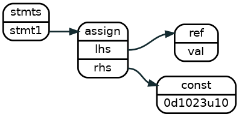
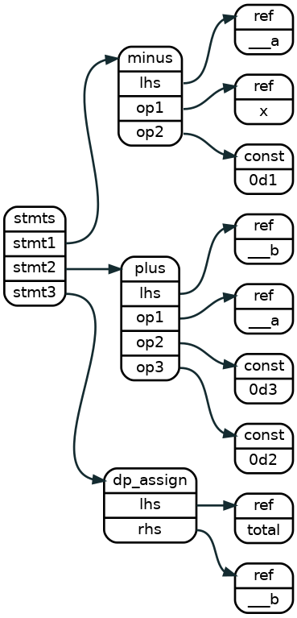
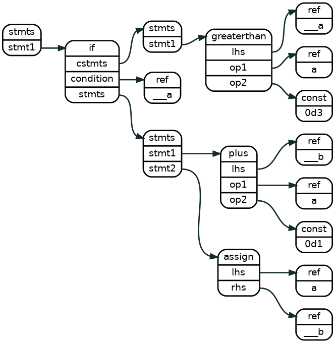
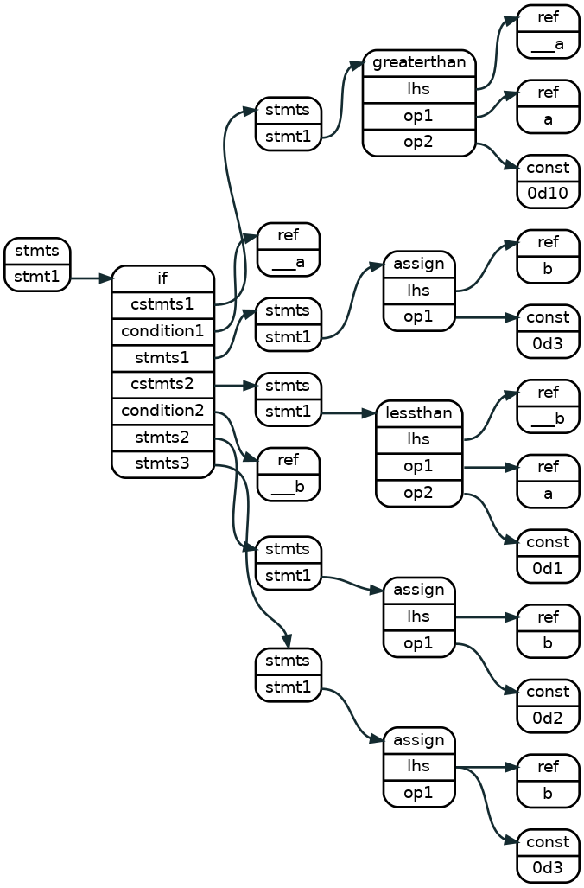
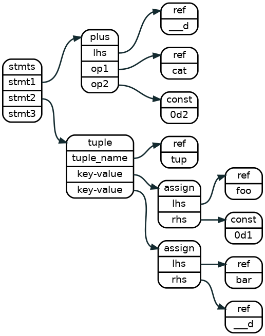
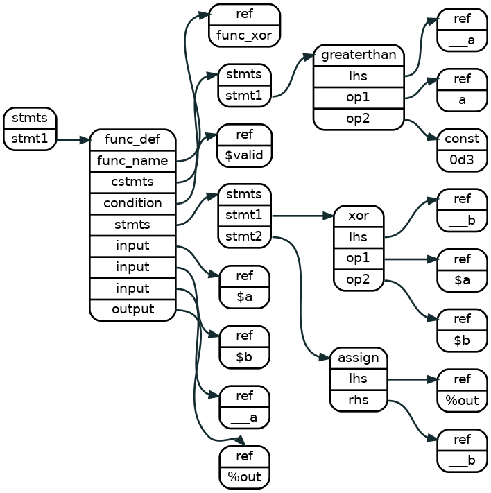
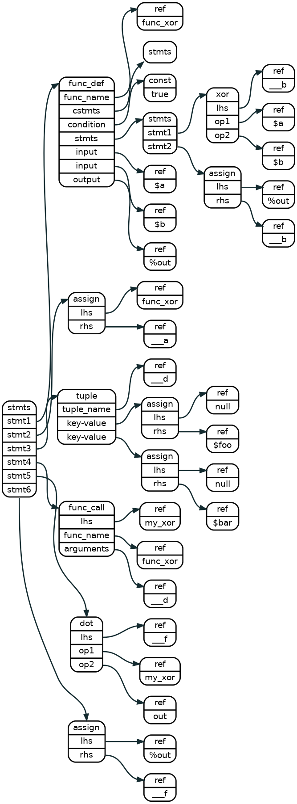

LNAST
Warning
This document is not updated to the latest changes
LNAST stands for Language-Neutral Abstract Syntax Tree, which is constituted of Lnast_nodes and indexed by a tree structure.
LiveHD has two main data structures: LNAST and LGraph. The LNAST is the higher level representation with a tree structure. The LGraph is the lower level representation with a graph structure. Each node in LGraph has a LNAST equivalent node, but LNAST is more high level and several nodes in LNAST may not have a one-to-one mapping to LGraph.
Each Lnast_node should has a specific node type and contain the following information from source code tokens
(a) line number
(b) pos_start, pos_end
(c) string_view (optional)
Function Overloadings of Node Data Construction
Every node construction method has four function overloadings.
For example, to construct a Lnast_node with a type of reference,
we could use one of the following functions:
// C++
auto node_ref = Lnast_node::create_ref("foo");
auto node_ref = Lnast_node::create_ref("foo", line_num);
auto node_ref = Lnast_node::create_ref("foo", line_num, pos1, pos2);
auto node_ref = Lnast_node::create_ref(token);
In case (1), you only knows the variable name is "foo".
In case (2), you know the variable name and the corresponding line number.
In case (3), you know the variable name, the line number, and the charactrer position.
In case (4), you are building LNAST from your HDL AST and you already have the Token.
The toke should have line number, positions, and string_view information.
Another Example
If you don't care the string_view to be stored in the lnast node, just leave it empty for set "foo" for it. This is true for many of the operator node, for example, to build a node with type of assign.
// C++
auto node_assign = Lnast_node::create_assign();
auto node_assign = Lnast_node::create_assign(line_num);
auto node_assign = Lnast_node::create_assign(line_num, pos1, pos2);
auto node_assign = Lnast_node::create_assign(token); // The token is not necessary to have a string_view
Module Input, Output, and Register Declaration
In LNAST, all input/output/register are defined in the node type reference with differenct prefix of string_view, "$" stands for input, "%" stands for output, and "#" stands for register.
Input
// Pyrope
foo = $a
// Verilog
input a;
// C++
auto node_input = Lnast_node::create_ref("$a", line_num, pos1, pos2);
Output
// Pyrope
%out
// Verilog
output out;
// C++
auto node_output = Lnast_node::create_ref("%out", line_num, pos1, pos2);
Register
// Pyrope
reg_foo
// Verilog
reg reg_foo;
// C++
auto node_reg = Lnast_node::create_ref("#reg_foo", line_num, pos1, pos2);
Assign Statement
LNAST has 3 types of assignments. "=", "as", and ":=".
- The "lhs = rhs" assignment (assign), copies the rhs value to the lhs and makes sure that there is no bit drop. The lhs has to have equal or more bits than the rhs.
- The "lhs as rhs" assignment (as) is the same as the "=" assignment but it fixes the value. The lhs variable becomes a "C++ const" after the assignment. The value assigned can not change again.
- the "lhs := rhs" assignment (dp_assign) is like the "=" assignment but there is no check for overflow. If the rhs has more bits than the lhs, the upper bits will be dropped.
Assign Trivial Constant
// Pyrope
val = 1023u10bits
// Verilog
assign val = 10`d1023 // val has 10 bits
// CFG
1 0 0 SEQ0
2 1 0 0 10 = val 0d1023u10
// C++
auto node_stmts = Lnast_node::create_stmts ("foo", line_num, pos1, pos2);
auto node_assign = Lnast_node::create_assign ("foo", line_num, pos1, pos2);
auto node_target = Lnast_node::create_ref ("val", line_num, pos1, pos2);
auto node_const = Lnast_node::create_const ("0d1023u10", line_num, pos1, pos2);
auto idx_stmts = lnast->add_child(idx_root, node_stmts);
auto idx_assign = lnast->add_child(idx_stmts, node_assign);
auto idx_target = lnast->add_child(idx_assign, node_target);
auto idx_const = lnast->add_child(idx_assign, node_const);

An assign node sets the right hand side value to the reference pointed by the left hand side
of the expression. The left hand side is always a reference. The right hand side is a reference or a constant.
Assign Simple Expression
// Pyrope
total := (x - 1) + 3 + 2
// Verilog
assign total = (x - 1) + 3 + 2
// CFG
1 0 0 SEQ0
2 1 0 0 21 - ___a x 0d1
3 1 1 0 21 + ___b ___a 0d3 0d2
4 1 3 0 21 = total ___b
// C++
// preparing lnast_node data
// Note: as mentioned in the introduction, if you have the HDL-AST in hand, using
// Token directly instead of explicit string, line_num, pos ... etc.
auto node_stmts = Lnast_node::create_stmts ("foo", line_num, pos1, pos2);
node node_minus = Lnast_node::create_minus ("foo", line_num, pos1, pos2);
node node_lhs1 = Lnast_node::create_ref ("___a", line_num, pos1, pos2);
node node_op1 = Lnast_node::create_ref ("x", line_num, pos1, pos2);
node node_op2 = Lnast_node::create_const ("0d1", line_num, pos1, pos2);
node node_plus = Lnast_node::create_plus ("bar", line_num, pos1, pos2);
node node_lhs2 = Lnast_node::create_ref ("___b", line_num, pos1, pos2);
node node_op3 = Lnast_node::create_ref ("___a", line_num, pos1, pos2);
node node_op4 = Lnast_node::create_const ("0d3", line_num, pos1, pos2);
node node_op5 = Lnast_node::create_const ("0d2", line_num, pos1, pos2);
auto node_dpa = Lnast_node::create_dp_assign ("foo2", line_num, pos1, pos2);
auto node_lhs3 = Lnast_node::create_ref ("total", line_num, pos1, pos2);
auto node_op6 = Lnast_node::create_ref ("___b", line_num, pos1, pos2);
// construct the LNAST tree
auto idx_stmts = lnast->add_child(idx_root, node_stmts);
auto idx_minus = lnast->add_child(idx_stmts, node_minus);
auto idx_lhs1 = lnast->add_child(idx_minus, node_lhs1);
auto idx_op1 = lnast->add_child(idx_minus, node_op1);
auto idx_op2 = lnast->add_child(idx_minus, node_op2);
auto idx_plus = lnast->add_child(idx_stmts, node_plus);
auto idx_lhs2 = lnast->add_child(idx_plus, node_lhs2);
auto idx_op3 = lnast->add_child(idx_plus, node_op3);
auto idx_op4 = lnast->add_child(idx_plus, node_op4);
auto idx_op5 = lnast->add_child(idx_plus, node_op5);
auto idx_assign = lnast->add_child(idx_stmts, node_dpa);
auto idx_lhs3 = lnast->add_child(idx_assign, node_lhs3);
auto idx_op6 = lnast->add_child(idx_assign, node_op6);
 statements that have operations must breakdown the operations per type, and then assign the temporal value to the assign node.
Unary Operation Statement
Unary operator is embedded as the prefix of the variable string_view
Binary Not Operation
// Pyrope
%out = ~$inp
// Verilog
input inp;
output wire out;
assign out = ~inp;
1 0 0 SEQ0
2 1 1 0 10 ~ %out $inp
//C++
auto idx_not = lnast->add_child(idx_not, Lnast_node::create_not(token1));
auto idx_lhs = lnast->add_child(idx_assign, Lnast_node::create_ref(token2)); // string_view = %out
auto idx_op = lnast->add_child(idx_assign, Lnast_node::create_ref(token3)); // string_view = $inp
Logical Not Operation
The not operation can be applied over logical values. Compares the input against zero to be true. The binary not just toggles each bit.
// Pyrope
%out = !$inp
// Verilog
input inp;
output wire out;
assign out = !inp;
1 0 0 SEQ0
2 1 1 0 10 ! %out $inp
//C++
auto idx_not = lnast->add_child(idx_logical_not, Lnast_node::create_logical_not(token1));
auto idx_lhs = lnast->add_child(idx_assign , Lnast_node::create_ref (token2)); // string_view = %out
auto idx_op = lnast->add_child(idx_assign , Lnast_node::create_ref (token3)); // string_view = $inp
N-ary Operation Statement
N-ary operation computes n rhs operands and assign the result to the lhs. The n-ary operator group includes
| Operator | Syntax |
|---|---|
| And | & |
| Or | | |
| Xor | ^ |
| Logical And | and |
| Logical Or | or |
| Plus | + |
| Minus | - |
| Multiply | * |
| Division | / |
| Equals to | == |
| Less than | < |
| Less than or Equals to | <= |
| Greater than | > |
| Greater than or Equals to | >= |
| Tuple concatenation | ++ |
We take the "And Operator" for explaination.
And Operation
// Pyrope
out = a & b & c
// Verilog
assign out = a & b & c
// CFG
1 0 0 SEQ0
2 1 0 0 21 & ___a a b c
3 1 3 0 21 = out ___a
// C++
auto idx_stmts = lnast->add_child(idx_root, Lnast_node::create_stmts(token0));
auto idx_and = lnast->add_child(idx_stmts, Lnast_node::create_and (token1)); // string_view = ___a
auto idx_lhs1 = lnast->add_child(idx_and, Lnast_node::create_ref (token2)); // string_view = a
auto idx_op1 = lnast->add_child(idx_and, Lnast_node::create_ref (token3)); // string_view = b
auto idx_op2 = lnast->add_child(idx_and, Lnast_node::create_ref (token4)); // string_view = c
auto idx_assign = lnast->add_child(idx_stmts, Lnast_node::create_assign(token5));
auto idx_lhs2 = lnast->add_child(idx_assign, Lnast_node::create_ref (token6)); // string_view = out
auto idx_op3 = lnast->add_child(idx_assign, Lnast_node::create_ref (token7)); // string_view = ___a
If Statement
Simple Case
if a > 3 {
b = a + 1
}
// CFG
1 0 0 SEQ0
2 1 0 0 24 if ___a
3 2 0 SEQ1
4 3 0 0 24 > ___a a 0d3
6 2 0 SEQ2
7 6 0 0 24 + ___b a 0d1
8 6 1 0 24 = a ___b
assign b2 = (a > 3) ? a + 1 : b;
//C++
auto idx_stmts0 = lnast->add_child(idx_root, Lnast_node::create_stmts (token_0));
auto idx_if = lnast->add_child(idx_stmts0, Lnast_node::create_if (token_1));
auto idx_cstmts = lnast->add_child(idx_if, Lnast_node::create_cstmts(token_2));
auto idx_gt = lnast->add_child(idx_cstmts, Lnast_node::create_gt (token_3));
auto idx_lhs = lnast->add_child(idx_gt, Lnast_node::create_ref (token_4)); //string_view = "___a"
auto idx_op1 = lnast->add_child(idx_gt, Lnast_node::create_ref (token_5)); //string_view = "a"
auto idx_op2 = lnast->add_child(idx_gt, Lnast_node::create_const (token_6)); //string_view = "0d3"
auto idx_cond1 = lnast->add_child(idx_if, Lnast_node::create_cond (token_7)); //string_view = "___a"
auto idx_stmts1 = lnast->add_child(idx_if, Lnast_node::create_stmts (token_8));
auto idx_plus = lnast->add_child(idx_stmts1, Lnast_node::create_plus (token_9));
auto idx_lhs = lnast->add_child(idx_plus, Lnast_node::create_ref (token_a)); //string_view = "___b"
auto idx_op3 = lnast->add_child(idx_plus, Lnast_node::create_ref (token_b)); //string_view = "a"
auto idx_op4 = lnast->add_child(idx_plus, Lnast_node::create_const (token_c)); //string_view = "0d1"
auto idx_assign = lnast->add_child(idx_stmts1, Lnast_node::create_assign(token_d));
auto idx_lhs = lnast->add_child(idx_assign, Lnast_node::create_ref (token_e)); //string_view = "a"
auto idx_op5 = lnast->add_child(idx_assign, Lnast_node::create_ref (token_f)); //string_view = "___b"
 An if-subtree consisted of conditional-statements sub-trees, boolean condition nodes, and statements sub-trees in the following order:
cstmts1 -> condition1 -> stmts1 -> cstmts2 -> condition2 -> stmts2 ...-> stmtsN,
If there is a final "else" chunk, it won't come with a corresponding conditionial statements sub-tree and conditional node, see the figure for the detail.
Full Case
// Pyrope
if a > 10 {
b = 3
} elif a < 1 {
b = 2
} else {
b = 1
}
// Verilog
assign b = (a > 10) ? 3 :
(a < 1 ) ? 2 : 1 ;
// CFG
1 0 0 SEQ0
2 1 0 0 62 if ___a
3 2 0 SEQ1
4 3 0 0 62 > ___a a 0d10
6 2 0 SEQ2
7 6 0 0 62 = b 0d3
9 2 2 0 62 elif ___b
10 2 0 SEQ3
11 10 0 0 62 < ___b a 0d1
13 2 0 SEQ4
14 13 0 0 62 = b 0d2
16 2 0 SEQ5
17 16 0 0 62 = b 0d1
//C++
auto idx_stmts0 = lnast->add_child(idx_root, Lnast_node::create_stmts (token_0));
auto idx_if = lnast->add_child(idx_stmts0, Lnast_node::create_if (token_1));
auto idx_cstmts1 = lnast->add_child(idx_if, Lnast_node::create_cstmts(token_2));
auto idx_gt = lnast->add_child(idx_cstmts, Lnast_node::create_gt (token_3));
auto idx_lhs = lnast->add_child(idx_gt, Lnast_node::create_ref (token_4)); //string_view = "___a"
auto idx_op1 = lnast->add_child(idx_gt, Lnast_node::create_ref (token_5)); //string_view = "a"
auto idx_op2 = lnast->add_child(idx_gt, Lnast_node::create_const (token_6)); //string_view = "0d10"
auto idx_cond1 = lnast->add_child(idx_if, Lnast_node::create_cond (token_7)); //string_view = "___a"
auto idx_stmts1 = lnast->add_child(idx_if, Lnast_node::create_stmts (token_8));
auto idx_assign = lnast->add_child(idx_stmts1, Lnast_node::create_assign(token_9));
auto idx_lhs = lnast->add_child(idx_assign, Lnast_node::create_ref (token_a)); //string_view = "b"
auto idx_op1 = lnast->add_child(idx_assign, Lnast_node::create_const (token_b)); //string_view = "0d3"
auto idx_cstmts2 = lnast->add_child(idx_if, Lnast_node::create_cstmts(token_c));
auto idx_lt = lnast->add_child(idx_cstmts, Lnast_node::create_lt (token_d));
auto idx_lhs = lnast->add_child(idx_lt, Lnast_node::create_ref (token_e)); //string_view = "___b"
auto idx_op2 = lnast->add_child(idx_lt, Lnast_node::create_ref (token_f)); //string_view = "a"
auto idx_op3 = lnast->add_child(idx_lt, Lnast_node::create_const (token_g)); //string_view = "0d1"
auto idx_cond2 = lnast->add_child(idx_if, Lnast_node::create_cond (token_h)); //string_view = "___b"
auto idx_stmts2 = lnast->add_child(idx_if, Lnast_node::create_stmts (token_i));
auto idx_assign = lnast->add_child(idx_stmts2, Lnast_node::create_assign(token_j));
auto idx_lhs = lnast->add_child(idx_assign, Lnast_node::create_ref (token_k)); //string_view = "b"
auto idx_op4 = lnast->add_child(idx_assign, Lnast_node::create_const (token_l)); //string_view = "0d2"
auto idx_stmts3 = lnast->add_child(idx_if, Lnast_node::create_stmts (token_m));
auto idx_assign = lnast->add_child(idx_stmts3, Lnast_node::create_assign(token_n));
auto idx_lhs = lnast->add_child(idx_assign, Lnast_node::create_ref (token_o)); //string_view = "b"
auto idx_op5 = lnast->add_child(idx_assign, Lnast_node::create_const (token_p)); //string_view = "0d3"

Tuple Statement
The tuple LNAST node first entry always points to a "ref" node. This is the destination of the tuple. The following entries point to LNAST nodes that can be "assign", "as", "ref", or "const".
// Pyrope
tup = (foo = 1, bar = cat + 2)
// Verilog
typede packed {
logic foo;
logic [4:0] bar;
} tup_t;
tup_t tup;
always_comb begin
tup.foo = 1;
tup.bar = cat + 2;
end
// CFG
// FIXME: SH: wait Akash to change tuple expression scope
1 0 x SEQ0
4 1 x 0 33 + ___d cat 0d2
2 1 x TUP0 ___a
3 2 x 0 33 = foo 0d1
5 2 x 0 33 = bar ___d
7 1 x 0 33 = tup ___a
//C++
auto idx_plus = lnast->add_child(idx_stmts0, Lnast_node::create_plus (token_1));
auto idx_lhs = lnast->add_child(idx_plus, Lnast_node::create_ref (token_2)); //string_view = "___d"
auto idx_op1 = lnast->add_child(idx_plus, Lnast_node::create_ref (token_3)); //string_view = "cat"
auto idx_op2 = lnast->add_child(idx_plus, Lnast_node::create_const (token_4)); //string_view = "0d2"
auto idx_tup = lnast->add_child(idx_stmts0, Lnast_node::create_tuple (token_5));
auto idx_tname = lnast->add_child(idx_tup, Lnast_node::create_ref (token_6)); //string_view = "tup"
auto idx_assign = lnast->add_child(idx_tup, Lnast_node::create_assign (token_7));
auto idx_lhs = lnast->add_child(idx_assign, Lnast_node::create_ref (token_8)); //string_view = "foo"
auto idx_op3 = lnast->add_child(idx_assign, Lnast_node::create_const (token_9)); //string_view = "0d1"
auto idx_assign = lnast->add_child(idx_tup, Lnast_node::create_assign (token_a));
auto idx_lhs = lnast->add_child(idx_assign, Lnast_node::create_ref (token_b)); //string_view = "bar"
auto idx_op4 = lnast->add_child(idx_assign, Lnast_node::create_ref (token_c)); //string_view = "___d"

Tuple Concatenation Statement
// Pyrope
tup = (foo = 1, bar = cat + 2)
tup = tup ++ (4, dog)
// Verilog
// CFG
1 0 x SEQ0
4 1 x 0 33 + ___d cat 0d2
2 1 x TUP0 tup
3 2 x 0 33 = foo 0d1
5 2 x 0 33 = bar ___d
7 1 x TUP1 ___f
8 7 x 35 54 = null 0d4
9 7 x 35 54 = null dog
10 1 x 35 54 ++ ___e tup ___f
11 1 x 35 54 = tup ___e
//C++
auto idx_plus = lnast->add_child(idx_stmts0, Lnast_node::create_plus (token_1));
auto idx_lhs = lnast->add_child(idx_plus, Lnast_node::create_ref (token_2)); //string_view = "___d"
auto idx_op1 = lnast->add_child(idx_plus, Lnast_node::create_ref (token_3)); //string_view = "cat"
auto idx_op2 = lnast->add_child(idx_plus, Lnast_node::create_const (token_4)); //string_view = "0d2"
auto idx_tup = lnast->add_child(idx_stmts0, Lnast_node::create_tuple (token_5));
auto idx_tname = lnast->add_child(idx_tup, Lnast_node::create_ref (token_6)); //string_view = "tup"
auto idx_assign = lnast->add_child(idx_tup, Lnast_node::create_assign (token_7));
auto idx_lhs = lnast->add_child(idx_assign, Lnast_node::create_ref (token_8)); //string_view = "foo"
auto idx_op3 = lnast->add_child(idx_assign, Lnast_node::create_const (token_9)); //string_view = "0d1"
auto idx_assign = lnast->add_child(idx_tup, Lnast_node::create_assign (token_a));
auto idx_lhs = lnast->add_child(idx_assign, Lnast_node::create_ref (token_b)); //string_view = "bar"
auto idx_op4 = lnast->add_child(idx_assign, Lnast_node::create_ref (token_c)); //string_view = "___d"
auto idx_tup2 = lnast->add_child(idx_stmts0, Lnast_node::create_tuple (token_g))
auto idx_tname = lnast->add_child(idx_tup2, Lnast_node::create_ref (token_h)); //string_view = "___f", for intermediate temp tuple
auto idx_op7 = lnast->add_child(idx_tup2 , Lnast_node::create_const (token_j)); //string_view = "0d4"
auto idx_op8 = lnast->add_child(idx_tup2 , Lnast_node::create_reg (token_m)); //string_view = "dog"
auto idx_tconcat = lnast->add_child(idx_stmts0, Lnast_node::create_tuple_concat (token_p));
auto idx_lhs = lnast->add_child(idx_tconcat, Lnast_node::create_ref (token_q)); //string_view = "___e"
auto idx_op9 = lnast->add_child(idx_tconcat, Lnast_node::create_ref (token_r)); //string_view = "tup"
auto idx_opa = lnast->add_child(idx_tconcat, Lnast_node::create_ref (token_s)); //string_view = "___f"
auto idx_assign = lnast->add_child(idx_stmts0, Lnast_node::create_assign (token_t));
auto idx_lhs = lnast->add_child(idx_assign, Lnast_node::create_ref (token_u)); //string_view = "tup"
auto idx_opb = lnast->add_child(idx_assign, Lnast_node::create_ref (token_v)); //string_view = "___e"
For Loop Statement
// Pyrope
for i in (0..3) {
tuple_foo[i] = tuple_bar[3-i]
}
// Verilog
// CFG
// FIXME: SH: still need to check with new CFG from Akash
1 0 x SEQ0
2 1 0 TUP0 ___b
3 2 0 0 51 .. ___c 0d0 0d3
5 1 2 0 51 for i ___b
7 5 0 SEQ1
8 7 0 0 51 [] ___d tuple_foo i
9 7 1 0 51 - ___g 0d3 i
10 7 2 0 51 [] ___f tuple_bar ___g
11 7 3 0 51 .() ___e ___f
12 7 4 0 51 = ___d ___e
//C++
auto idx_tup = lnast->add_child(idx_stmts0, Lnast_node::create_tuple (token_1));
auto idx_tname = lnast->add_child(idx_tup, Lnast_node::create_ref (token_2)); //string_view = "___b"
auto idx_assign = lnast->add_child(idx_tup, Lnast_node::create_assign (token_3));
auto idx_lhs = lnast->add_child(idx_assign, Lnast_node::create_ref (token_4)); //string_view = "__range_begin"
auto idx_op3 = lnast->add_child(idx_assign, Lnast_node::create_const (token_5)); //string_view = "0d0"
auto idx_assign = lnast->add_child(idx_tup, Lnast_node::create_assign (token_6));
auto idx_lhs = lnast->add_child(idx_assign, Lnast_node::create_ref (token_7)); //string_view = "__range_end"
auto idx_op3 = lnast->add_child(idx_assign, Lnast_node::create_const (token_8)); //string_view = "0d3"
auto idx_for = lnast->add_child(idx_stmts0, Lnast_node::create_for (token_9));
auto idx_stmts1 = lnast->add_child(idx_for, Lnast_node::create_stmts(token_a));
auto idx_itr = lnast->add_child(idx_for, Lnast_node::create_ref (token_b)); //string_view = "i"
auto idx_itr_range = lnast->add_child(idx_for, Lnast_node::create_ref (token_c)); //string_view = "___b"
auto idx_select = lnast->add_child(idx_stmts1, Lnast_node::create_select (token_d));
auto idx_lhs = lnast->add_child(idx_select, Lnast_node::create_ref (token_e)); //string_view = "___d"
auto idx_op4 = lnast->add_child(idx_select, Lnast_node::create_ref (token_f)); //string_view = "tup_foo"
auto idx_op5 = lnast->add_child(idx_select, Lnast_node::create_ref (token_g)); //string_view = "i"
auto idx_minus = lnast->add_child(idx_stmts1, Lnast_node::create_minus (token_h));
auto idx_lhs = lnast->add_child(idx_minus, Lnast_node::create_ref (token_i)); //string_view = "___g"
auto idx_op6 = lnast->add_child(idx_minus, Lnast_node::create_cond (token_j)); //string_view = "0d3"
auto idx_op7 = lnast->add_child(idx_minus, Lnast_node::create_ref (token_k)); //string_view = "i"
auto idx_select = lnast->add_child(idx_stmts1, Lnast_node::create_select (token_l));
auto idx_lhs = lnast->add_child(idx_select, Lnast_node::create_ref (token_m)); //string_view = "___f"
auto idx_op8 = lnast->add_child(idx_select, Lnast_node::create_ref (token_n)); //string_view = "tup_bar"
auto idx_op9 = lnast->add_child(idx_select, Lnast_node::create_ref (token_o)); //string_view = "___g"
auto idx_assign = lnast->add_child(idx_stmts1, Lnast_node::create_assign (token_p));
auto idx_lhs = lnast->add_child(idx_assign, Lnast_node::create_ref (token_q)); //string_view = "___d"
auto idx_opa = lnast->add_child(idx_assign, Lnast_node::create_ref (token_r)); //string_view = "___f"
While Loop Statement
// Pyrope
for i in (0..3) {
tup_foo[i] = tup_bar[3-i]
}
// Verilog
// CFG
1 0 0 SEQ0
2 1 0 0 58 > ___a i 0d0
3 1 1 0 58 while ___a
5 3 0 SEQ1
6 5 0 0 58 [] ___b tup_foo i
7 5 1 0 58 - ___e 0d3 i
8 5 2 0 58 [] ___d tup_bar ___e
9 5 4 0 58 = ___b ___d
10 5 5 0 58 - ___f i 0d1
11 5 6 0 58 = i ___f
//C++
auto idx_while = lnast->add_child(idx_stmts0, Lnast_node::create_while (token_0));
auto idx_cond = lnast->add_child(idx_while, Lnast_node::create_cond (token_1)); //string_view = "___a"
auto idx_stmts1 = lnast->add_child(idx_while, Lnast_node::create_stmts (token_2));
auto idx_exp1 = lnast->add_child(idx_stmts1, Lnast_node::create_select (token_3)); //string_view = "___b"
.
.
.
Function Definition Statement
Basic Function Definition
A function could be viewed as a module, the arguments of a function represent the module IO with the io-prefix, $ for input or % for output.
In LNAST, a function definition statement is composed as the following node sequence:
function_name -> condition -> statements(function body) -> io_1 -> io_2 -> io_N ...
// Pyrope
func_xor = :($a, $b, %out):{
%out = $a ^ $b
}
// Verilog
module func_xor(
input a,
input b,
outpout wire out
);
assign out = a ^ b;
endmodule
// CFG
1 0 0 SEQ0
2 1 0 0 47 ::{ ___a null $a $b %out
4 2 0 SEQ1
5 4 0 0 47 ^ ___b $a $b
6 4 1 0 47 = %out ___b
7 1 1 0 47 = func_xor \___a
//C++
auto idx_stmts0 = lnast->add_child(idx_root, Lnast_node::create_stmts (token_0));
auto idx_func = lnast->add_child(idx_stmts0, Lnast_node::create_func_def(token_1));
auto idx_fname = lnast->add_child(idx_func, Lnast_node::create_ref (token_2)); //string_view = "func_xor"
auto idx_cond = lnast->add_child(idx_func, Lnast_node::create_cond (token_3)); //string_view = "true"
auto idx_stmts1 = lnast->add_child(idx_func, Lnast_node::create_stmts (token_4));
auto idx_io1 = lnast->add_child(idx_func, Lnast_node::create_ref (token_5)); //string_view = "$a"
auto idx_io2 = lnast->add_child(idx_func, Lnast_node::create_ref (token_6)); //string_view = "$b"
auto idx_io3 = lnast->add_child(idx_func, Lnast_node::create_ref (token_7)); //string_view = "$out"
auto idx_xor = lnast->add_child(idx_stmts1, Lnast_node::create_xor (token_7));
auto idx_lhs = lnast->add_child(idx_xor, Lnast_node::create_ref (token_8)); //string_view = "___b"
auto idx_op1 = lnast->add_child(idx_xor, Lnast_node::create_ref (token_9)); //string_view = "$a"
auto idx_op2 = lnast->add_child(idx_xor, Lnast_node::create_ref (token_a)); //string_view = "$b"
auto idx_assign = lnast->add_child(idx_stmts1, Lnast_node::create_assign (token_b));
auto idx_lhs = lnast->add_child(idx_assign, Lnast_node::create_ref (token_c)); //string_view = "%out"
auto idx_op1 = lnast->add_child(idx_assign, Lnast_node::create_ref (token_d)); //string_view = "___b"
Conditional Function Definition
If the HDL support the conditional function definition, for example, Pyrope, we have to assign the appropriate condition variable to the condition node. In the example of the following Pyrope code, the func_xor function will only be declared when its intput $valid is true. For normal case, we assign "true" string_view to this condition node. See figure for better understanding.
// Pyrope
func_xor = :($a, $b, $valid, %out) when $valid:{
%out = $a ^ $b
}
// Verilog
module func_xor(
input a,
input b,
outpout wire out
);
assign out = a ^ b;
endmodule
// CFG
1 0 0 SEQ0
2 1 0 0 47 ::{ ___a $valid $a $b $valid %out
4 2 0 SEQ1
5 4 0 0 47 ^ ___b $a $b
6 4 1 0 47 = %out ___b
7 1 1 0 47 = func_xor \___a
//C++
auto idx_stmts0 = lnast->add_child(idx_root, Lnast_node::create_stmts (token_0));
auto idx_func = lnast->add_child(idx_stmts0, Lnast_node::create_func_def(token_1));
auto idx_fname = lnast->add_child(idx_func, Lnast_node::create_ref (token_2)); //string_view = "func_xor"
auto idx_cond = lnast->add_child(idx_func, Lnast_node::create_cond (token_3)); //string_view = "$valid"
auto idx_stmts1 = lnast->add_child(idx_func, Lnast_node::create_stmts (token_4));
auto idx_io1 = lnast->add_child(idx_func, Lnast_node::create_ref (token_5)); //string_view = "$a"
auto idx_io2 = lnast->add_child(idx_func, Lnast_node::create_ref (token_6)); //string_view = "$b"
auto idx_io3 = lnast->add_child(idx_func, Lnast_node::create_ref (token_7)); //string_view = "$out"
auto idx_xor = lnast->add_child(idx_stmts1, Lnast_node::create_xor (token_7));
auto idx_lhs = lnast->add_child(idx_xor, Lnast_node::create_ref (token_8)); //string_view = "___b"
auto idx_op1 = lnast->add_child(idx_xor, Lnast_node::create_ref (token_9)); //string_view = "$a"
auto idx_op2 = lnast->add_child(idx_xor, Lnast_node::create_ref (token_a)); //string_view = "$b"
auto idx_assign = lnast->add_child(idx_stmts1, Lnast_node::create_assign (token_b));
auto idx_lhs = lnast->add_child(idx_assign, Lnast_node::create_ref (token_c)); //string_view = "%out"
auto idx_op1 = lnast->add_child(idx_assign, Lnast_node::create_ref (token_d)); //string_view = "___b"
auto idx_assign = lnast->add_child(idx_stmts0, Lnast_node::create_assign (token_e));
auto idx_lhs = lnast->add_child(idx_assign, Lnast_node::create_ref (token_f)); //string_view = "func_xor"
auto idx_op1 = lnast->add_child(idx_assign, Lnast_node::create_ref (token_g)); //string_view = "\___a"

Function Call
Implicit Function Argument Assignment
// Pyrope
func_xor = :($a, $b, %out):{
%out = $a ^ $b
}
my_xor = func_xor($foo, $bar)
%out = my_xor.out
// Verilog
module func_xor(
input a,
input b,
outpout wire out
);
assign out = a ^ b;
endmodule
module top(
input foo,
input bar,
output wire out
);
func_xor my_xor(.a(foo), .b(bar), .out(out))
endmodule
// CFG
1 0 0 SEQ0
2 1 0 0 47 ::{ ___a null $a $b %out
4 2 0 SEQ1
5 4 0 0 47 ^ ___b $a $b
6 4 1 0 47 = %out ___b
7 1 1 0 47 = func_xor \___a
8 1 0 TUP0 ___d
9 8 2 49 = null $foo
10 8 3 49 = null $bar
11 1 4 49 78 .() my_xor func_xor ___d
13 1 6 79 96 . ___f my_xor out
15 1 8 79 96 = %out ___f
//C++
auto idx_stmts0 = lnast->add_child(idx_root, Lnast_node::create_stmts (token_0));
auto idx_func = lnast->add_child(idx_stmts0, Lnast_node::create_func_def(token_1));
auto idx_fname = lnast->add_child(idx_func, Lnast_node::create_ref (token_2)); //string_view = "func_xor"
auto idx_cond = lnast->add_child(idx_func, Lnast_node::create_cond (token_3)); //string_view = "true"
auto idx_stmts1 = lnast->add_child(idx_func, Lnast_node::create_stmts (token_4));
auto idx_io1 = lnast->add_child(idx_func, Lnast_node::create_ref (token_5)); //string_view = "$a"
auto idx_io2 = lnast->add_child(idx_func, Lnast_node::create_ref (token_6)); //string_view = "$b"
auto idx_io3 = lnast->add_child(idx_func, Lnast_node::create_ref (token_7)); //string_view = "$out"
auto idx_xor = lnast->add_child(idx_stmts1, Lnast_node::create_xor (token_8));
auto idx_lhs = lnast->add_child(idx_xor, Lnast_node::create_ref (token_9)); //string_view = "___b"
auto idx_op1 = lnast->add_child(idx_xor, Lnast_node::create_ref (token_a)); //string_view = "$a"
auto idx_op2 = lnast->add_child(idx_xor, Lnast_node::create_ref (token_b)); //string_view = "$b"
auto idx_assign = lnast->add_child(idx_stmts1, Lnast_node::create_assign (token_c));
auto idx_lhs = lnast->add_child(idx_assign, Lnast_node::create_ref (token_d)); //string_view = "%out"
auto idx_op1 = lnast->add_child(idx_assign, Lnast_node::create_ref (token_e)); //string_view = "___b"
auto idx_assign = lnast->add_child(idx_stmts0, Lnast_node::create_assign (token_f));
auto idx_lhs = lnast->add_child(idx_assign, Lnast_node::create_ref (token_g)); //string_view = "func_xor"
auto idx_op1 = lnast->add_child(idx_assign, Lnast_node::create_ref (token_h)); //string_view = "\___a"
auto idx_tup = lnast->add_child(idx_stmts0, Lnast_node::create_tuple (token_i));
auto idx_tname = lnast->add_child(idx_tup, Lnast_node::create_ref (token_j)); //string_view = "___d"
auto idx_assign = lnast->add_child(idx_tup, Lnast_node::create_assign (token_k));
auto idx_lhs = lnast->add_child(idx_assign, Lnast_node::create_ref (token_l)); //string_view = "null"
auto idx_op3 = lnast->add_child(idx_assign, Lnast_node::create_ref (token_m)); //string_view = "$foo"
auto idx_assign = lnast->add_child(idx_tup, Lnast_node::create_assign (token_n));
auto idx_lhs = lnast->add_child(idx_assign, Lnast_node::create_ref (token_o)); //string_view = "null"
auto idx_op3 = lnast->add_child(idx_assign, Lnast_node::create_ref (token_p)); //string_view = "$bar"
auto idx_fcall = lnast->add_child(idx_stmts0, Lnast_node::create_func_call(token_q));
auto idx_lhs = lnast->add_child(idx_fcall, Lnast_node::create_ref (token_r)); //string_view = "my_xor"
auto idx_target = lnast->add_child(idx_fcall, Lnast_node::create_ref (token_s)); //string_view = "func_xor"
auto idx_arg = lnast->add_child(idx_fcall, Lnast_node::create_ref (token_t)); //string_view = "___d"
auto idx_dot = lnast->add_child(idx_stmts0, Lnast_node::create_dot (token_u));
auto idx_lhs = lnast->add_child(idx_dot , Lnast_node::create_ref (token_v)); //string_view = "___f"
auto idx_op1 = lnast->add_child(idx_dot , Lnast_node::create_ref (token_w)); //string_view = "my_xor"
auto idx_op2 = lnast->add_child(idx_dot , Lnast_node::create_ref (token_x)); //string_view = "out"
auto idx_assign = lnast->add_child(idx_stmts0, Lnast_node::create_assign (token_y));
auto idx_lhs = lnast->add_child(idx_assign, Lnast_node::create_ref (token_z)); //string_view = "%out"
auto idx_op1 = lnast->add_child(idx_assign, Lnast_node::create_ref (token_aa));//string_view = "___f"

Explicit Function Argument Assignment
// Pyrope
func_xor = :($a, $b, %out):{
%out = $a ^ $b
}
my_xor = func_xor(a = $foo, b = $bar)
%out = my_xor.out
// Verilog
module func_xor(
input a,
input b,
outpout wire out
);
assign out = a ^ b;
endmodule
module top(
input foo,
input bar,
output wire out
);
func_xor my_xor(.a(foo), .b(bar), .out(out))
endmodule
// CFG
1 0 0 SEQ0
2 1 0 0 47 ::{ ___a null $a $b %out
4 2 0 SEQ1
5 4 0 0 47 ^ ___b $a $b
6 4 1 0 47 = %out ___b
7 1 1 0 47 = func_xor \___a
8 1 0 TUP0 ___d
10 8 3 49 86 = a $foo
12 8 5 49 86 = b $bar
13 1 6 49 86 .() ___c func_xor ___d
14 1 7 49 86 = my_xor ___c
15 1 8 87 104 . ___j my_xor out
17 1 10 87 104 = %out ___j
//C++
auto idx_stmts0 = lnast->add_child(idx_root, Lnast_node::create_stmts (token_0));
auto idx_func = lnast->add_child(idx_stmts0, Lnast_node::create_func_def(token_1));
auto idx_fname = lnast->add_child(idx_func, Lnast_node::create_ref (token_2)); //string_view = "func_xor"
auto idx_cond = lnast->add_child(idx_func, Lnast_node::create_cond (token_3)); //string_view = "true"
auto idx_stmts1 = lnast->add_child(idx_func, Lnast_node::create_stmts (token_4));
auto idx_io1 = lnast->add_child(idx_func, Lnast_node::create_ref (token_5)); //string_view = "$a"
auto idx_io2 = lnast->add_child(idx_func, Lnast_node::create_ref (token_6)); //string_view = "$b"
auto idx_io3 = lnast->add_child(idx_func, Lnast_node::create_ref (token_7)); //string_view = "$out"
auto idx_xor = lnast->add_child(idx_stmts1, Lnast_node::create_xor (token_8));
auto idx_lhs = lnast->add_child(idx_xor, Lnast_node::create_ref (token_9)); //string_view = "___b"
auto idx_op1 = lnast->add_child(idx_xor, Lnast_node::create_ref (token_a)); //string_view = "$a"
auto idx_op2 = lnast->add_child(idx_xor, Lnast_node::create_ref (token_b)); //string_view = "$b"
auto idx_assign = lnast->add_child(idx_stmts1, Lnast_node::create_assign (token_c));
auto idx_lhs = lnast->add_child(idx_assign, Lnast_node::create_ref (token_d)); //string_view = "%out"
auto idx_op1 = lnast->add_child(idx_assign, Lnast_node::create_ref (token_e)); //string_view = "___b"
auto idx_assign = lnast->add_child(idx_stmts0, Lnast_node::create_assign (token_f));
auto idx_lhs = lnast->add_child(idx_assign, Lnast_node::create_ref (token_g)); //string_view = "func_xor"
auto idx_op1 = lnast->add_child(idx_assign, Lnast_node::create_ref (token_h)); //string_view = "\___a"
auto idx_tup = lnast->add_child(idx_stmts0, Lnast_node::create_tuple (token_i));
auto idx_tname = lnast->add_child(idx_tup, Lnast_node::create_ref (token_j)); //string_view = "___d"
auto idx_assign = lnast->add_child(idx_tup, Lnast_node::create_assign (token_k));
auto idx_lhs = lnast->add_child(idx_assign, Lnast_node::create_ref (token_l)); //string_view = "a"
auto idx_op3 = lnast->add_child(idx_assign, Lnast_node::create_ref (token_m)); //string_view = "$foo"
auto idx_assign = lnast->add_child(idx_tup, Lnast_node::create_assign (token_n));
auto idx_lhs = lnast->add_child(idx_assign, Lnast_node::create_ref (token_o)); //string_view = "b"
auto idx_op3 = lnast->add_child(idx_assign, Lnast_node::create_ref (token_p)); //string_view = "$bar"
auto idx_fcall = lnast->add_child(idx_stmts0, Lnast_node::create_func_call(token_q));
auto idx_lhs = lnast->add_child(idx_fcall, Lnast_node::create_ref (token_r)); //string_view = "my_xor"
auto idx_target = lnast->add_child(idx_fcall, Lnast_node::create_ref (token_s)); //string_view = "func_xor"
auto idx_arg = lnast->add_child(idx_fcall, Lnast_node::create_ref (token_t)); //string_view = "___d"
auto idx_dot = lnast->add_child(idx_stmts0, Lnast_node::create_dot (token_u));
auto idx_lhs = lnast->add_child(idx_dot , Lnast_node::create_ref (token_v)); //string_view = "___j"
auto idx_op1 = lnast->add_child(idx_dot , Lnast_node::create_ref (token_w)); //string_view = "my_xor"
auto idx_op2 = lnast->add_child(idx_dot , Lnast_node::create_ref (token_x)); //string_view = "out"
auto idx_assign = lnast->add_child(idx_stmts0, Lnast_node::create_assign (token_y));
auto idx_lhs = lnast->add_child(idx_assign, Lnast_node::create_ref (token_z)); //string_view = "%out"
auto idx_op1 = lnast->add_child(idx_assign, Lnast_node::create_ref (token_aa));//string_view = "___j"
// Pyrope
val = 1023u10bits
Attribute statement
There are two ways to set an attribute to a variable or tuple, using "." dot operator directly or using as (__attr = foo). An classical attribute setting is bitwidth assignment.
// Pyrope
foo.__bits = 3
foo = 7
bar as (__bits = 10)
bar = 123
// Verilog
wire [2:0] foo;
wire [9:0] bar;
assign foo = 7;
assign bar = 123;
// CFG
1 0 0 SEQ0
2 1 0 0 14 . ___a foo __bits
3 1 1 0 14 = ___a 0d3
4 1 2 15 22 = foo 0d7
5 1 0 TUP0 ___b
6 5 3 24 44 = __bits 0d10
7 1 4 24 44 as bar ___b
8 1 5 45 54 = bar 0d123
// C++
auto idx_dot = lnast->add_child(idx_stmts, Lnast_node::create_dot (token1));
auto idx_lhs1 = lnast->add_child(idx_dot, Lnast_node::create_ref (token2)); // string_view = ___a
auto idx_op1 = lnast->add_child(idx_dot, Lnast_node::create_ref (token3)); // string_view = foo
auto idx_op2 = lnast->add_child(idx_dot, Lnast_node::create_ref (token4)); // string_view = __bits
auto idx_assign = lnast->add_child(idx_stmts, Lnast_node::create_assign(token5));
auto idx_lhs2 = lnast->add_child(idx_assign, Lnast_node::create_ref (token6)); // string_view = ___a
auto idx_op3 = lnast->add_child(idx_assign, Lnast_node::create_const (token7)); // string_view = 0d3
auto idx_assign = lnast->add_child(idx_stmts, Lnast_node::create_assign(token8));
auto idx_lhs2 = lnast->add_child(idx_assign, Lnast_node::create_ref (token9)); // string_view = foo
auto idx_op3 = lnast->add_child(idx_assign, Lnast_node::create_const (tokena)); // string_view = 0d7
auto idx_tup = lnast->add_child(idx_stmts, Lnast_node::create_tuple (tokenb));
auto idx_tname = lnast->add_child(idx_tup, Lnast_node::create_ref (tokenc)); // string_view = ___b
auto idx_assign = lnast->add_child(idx_tup, Lnast_node::create_assign(tokend));
auto idx_lhs = lnast->add_child(idx_assign, Lnast_node::create_ref (tokene)); //string_view = "__bits"
auto idx_op4 = lnast->add_child(idx_assign, Lnast_node::create_const (tokenf)); //string_view = "0d10"
auto idx_as = lnast->add_child(idx_stmts, Lnast_node::create_as (tokeng));
auto idx_lhs = lnast->add_child(idx_assign, Lnast_node::create_ref (tokenh)); //string_view = "bar"
auto idx_op5 = lnast->add_child(idx_assign, Lnast_node::create_ref (tokeni)); //string_view = "___b"
auto idx_assign = lnast->add_child(idx_stmts, Lnast_node::create_assign(tokenj));
auto idx_lhs = lnast->add_child(idx_assign, Lnast_node::create_ref (tokenk)); //string_view = "bar"
auto idx_op6 = lnast->add_child(idx_assign, Lnast_node::create_const (tokenk)); //string_view = "0d123"
String management
LNAST has to handle lots of strings. Each LNAST node has several strings, for example, the simple "ref" node has 2 strings: the variable name and the contents.
The LNAST interface does not allocate strings when passed as arguments. The reason is that it accepts std::string_view as argument. The LNAST internals assume that someone else handles the string allocations. A code like this will result in incorrect behaviour:
// WARNING: INCORRECT CODE
std::string str{"foo"};
str += "bar";
auto Lnast_node::create_ref(str);
The reason is that str is allocated at the stack, and after the function returns LNAST will have a pointer to incorrect memory region.
The solution is that for newly created strings, the "add_string" API must be called.
// CORRECT CODE to handle strings in LNAST
std::string str{"foo"};
str += "bar";
auto Lnast_node::create_ref(lnast->add_string(str));
The add_string allocates a string inside lnast. When the lnast is de-allocated the string is garbage collected.
LNAST is optimized to operate with scanner parsers. When LNAST is built, it is possible to pass a memory region mmaped with all the strings used by the scanner. In this case, the LNAST can get ownership of a large memory region with all the strings used by the scanner.
// LNAST mmap support
std::pair<std::string_view, int> own;
// own.first points to the mmap region that lnast will munmap at the end
// own.second points to the file descriptor associated to the mmap that must be closed
lnast = std::make_unique<Lnast>("top_name", own);